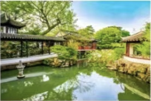
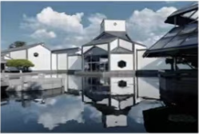
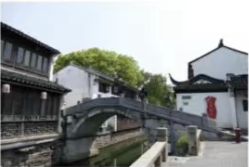
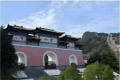
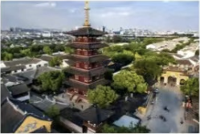

拙政园
批政园是位于江苏省苏州市的一座著名古典园林，始建于明代正德初年，是江南园林的代表作之一。拙政园占地约83.5亩，开放面积约73亩，其中包括园林中部，西部及晚清张之万住宅(今苏州园林博物馆旧馆)，约占
虎丘
虎丘位于苏州城西北郊，距离市中心约5公里是苏州的标志性翠点之一。虎丘海拔仅36米但因其独特的地质结构和丰常的历史文化内涵而蕾称。虎丘最著名的摄点是云岩寺塔，建于宋代，是世界第二斜堵，已有一千多年

苏州博物馆
苏州博柳馆位于苏州市东北街，是一座集历史、艺术、文化于一体的综合性博物馆。博物馆由著名建筑师贝津铭设计，融合了传统苏州园林风格和现代建筑元素，被誉为现代建筑的杰作。博物馆收藏了大量珍费的文物和艺术品

平江路
平江路是苏州古城中保存最为完整的一条历史老街，全长约1.6公里。这条街道沿河而建，两侧是典型的江南水乡建筑，体现了苏州古城的风貌。平江路保留了许多古代商铺、民居和桥梁，是体验苏州传统生活方式和文化氛

金鸡湖景区
金鸡湖渠区位于苏州工业园区，是中国最大的内城湖泊之一。湖中有多个人工岛屿，环绕着湖岸的是现代化的建筑群和操地，金鸡湖景区以其优美的自然风光和现代化的城市景观而著称，是苏州的新城区和商业中心。游客可以

寒山寺
寒山专位于苏州市姑苏区，是一座历史悠久的佛教专庙，始建于南朝时期。寒山专因唐代诗人张继的名诗《枫桥夜泊》而闻名于世。寺内有钟楼、大雄宝殿等建筑，以及寒山、拾得两位高僧的雕像，寒山寺不仅是一处京教圣地